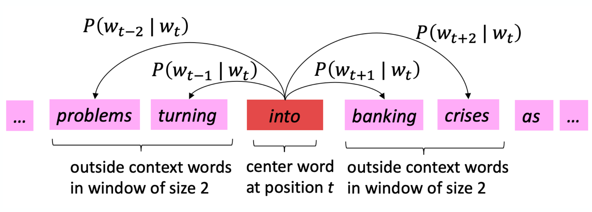
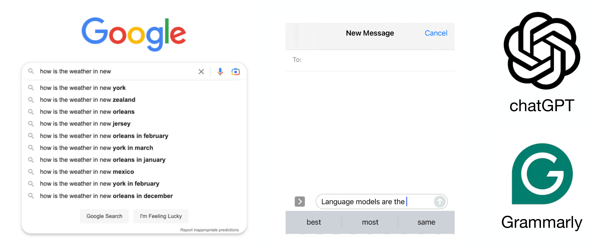
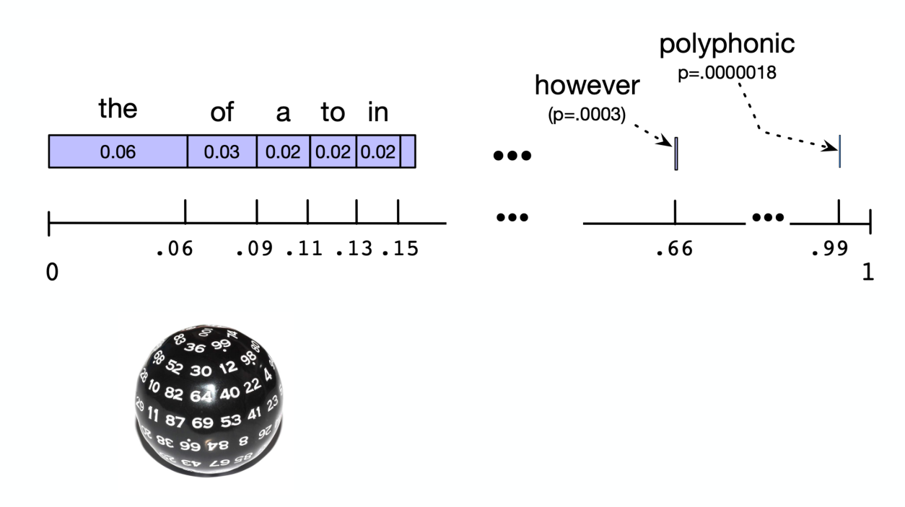
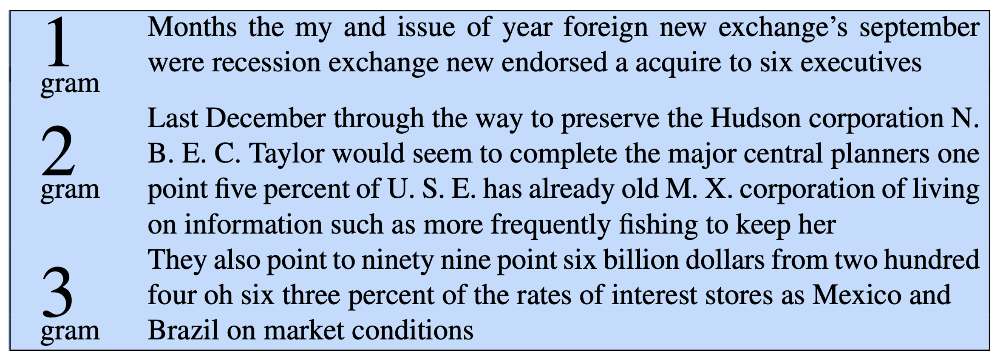
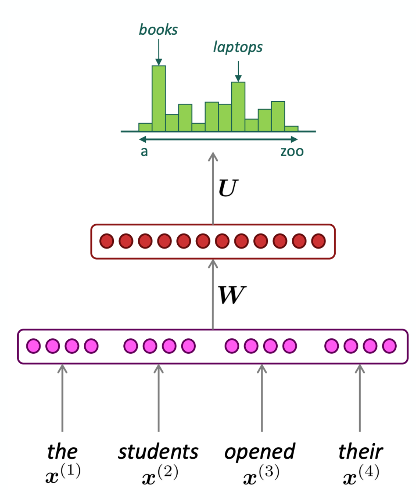
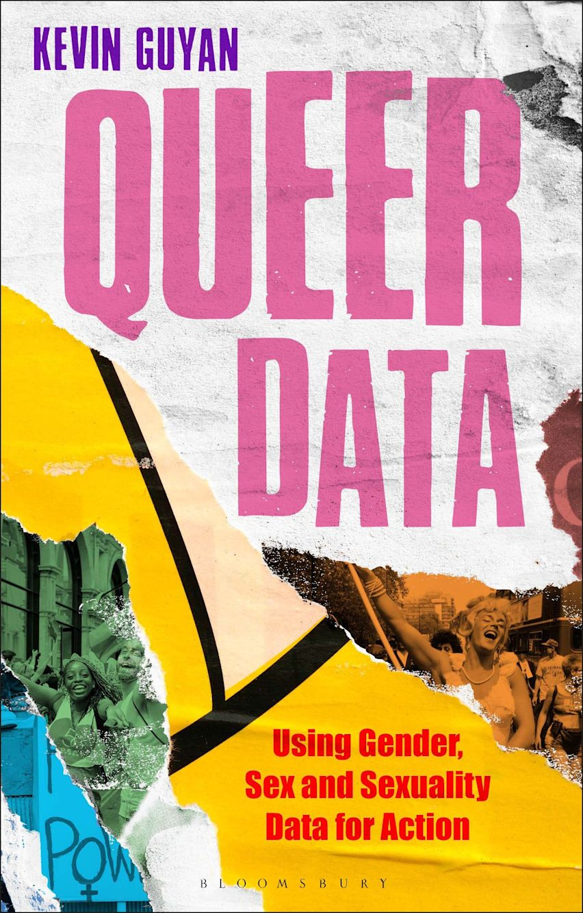
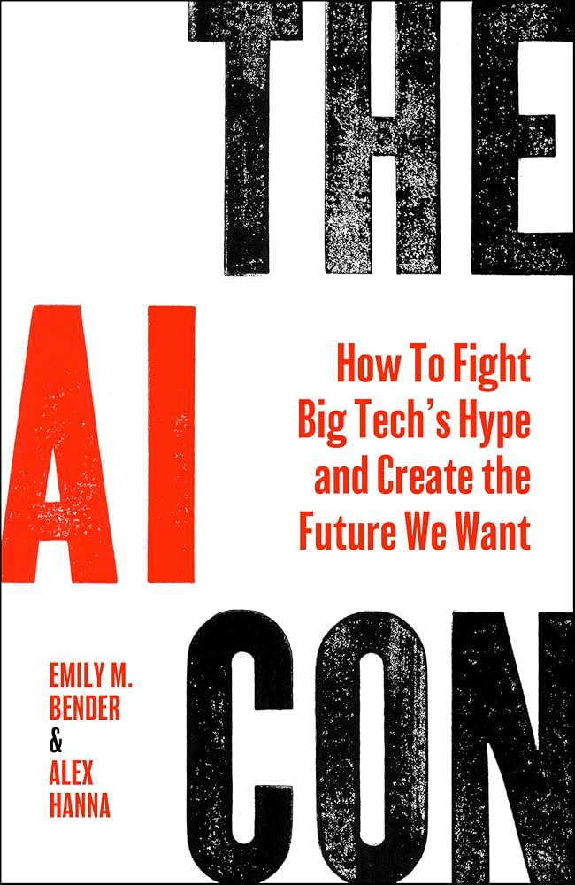
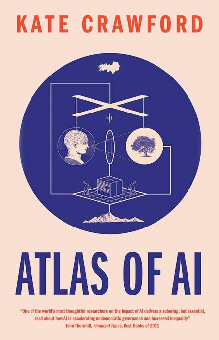
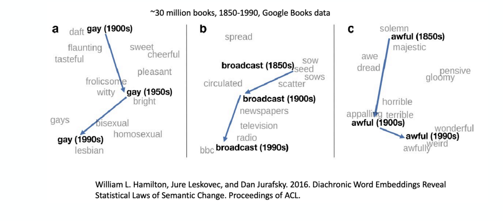

Definition (meaning) – the idea represented by a word or phrase
Denotational semantics – pairing between a signifier (word) and signified (idea): tree ⇔ {🌲, 🌳, 🌴}
Construct representation by similarities from semantics (e.g., synonyms): - synonyms: car/automobile; antonyms: dark/light - words that are not synonyms or antonyms but share some meaning, e.g. cat/dog, car/bicycle - and words that are not similar but are still related, e.g. coffee/cup, chef/menu
Great resource, but requires human annotations, words are constantly changing, lacks nuance (e.g., abstracts), and has no inherent numerical structure.
Representing words by context
Distributional semantics: a word’s meaning is given by the words that frequently appear close-by.
“You shall know a word by the company it keeps” (J. R. Firth 1957: 11)
J. R. Firth
One of the most successful ideas in modern statistical NLP.
Context words around “banking” in three sentences
These context words will representbanking.
Distributional hypothesis
“Ong choy” - Ong choy is delicious sautéed with garlic - Ong choy is superb over rice - Ong choy leaves with salty sauces
You may have previously seen: - spinach sautéed with garlic over rice - chard stems and leaves are delicious - collard greens and other salty leafy greens
Ipomoea aquatica, widely known as water spinach
Ipomoea aquatica, widely known as water spinach.
Word vectors from co-occurrence matrix
How can we employ the distributional hypothesis computationally?
Idea: accumulate statistics for what words appear near each other.
Each column (word) contains counts of how often \(w_i\) appears next to \(w_j\). There’s a choice of how many context words to include in the counting (window size).
Example corpus: “I like statistics”, “I like NLP”, “I enjoy coffee”
count
I
like
statistics
NLP
enjoy
coffee
I
0
2
0
0
1
0
like
2
0
1
1
0
0
statistics
0
1
0
0
0
0
NLP
0
1
0
0
0
0
enjoy
1
0
0
0
0
1
coffee
0
0
0
0
1
0
Improving the co-occurrence matrix
Problem 1 – raw counts lead to bad vector representations. - Frequency is clearly useful information, but overly frequent words are not informative context words. - Solution: introduce a weighted function.
Problem 2 – the co-occurrence matrix \(A \in \mathbb{R}^{|V| \times |V|}\) is large and sparse. - Solution: introduce the Singular Value Decomposition (SVD).
WarningDCP1
Pointwise Mutual Information
Problem 1 – raw counts lead to bad vector representations.
Instead we will introduce Pointwise Mutual Information (PMI):
Problem 2 – the co-occurrence matrix is large and sparse: - Very high-dimensional, \(A \in \mathbb{R}^{100{,}000 \times 100{,}000}\) (requires a lot of memory even though sparse) - Can be less robust for some models. How to reduce the dimensionality?
Learning word embeddings
Word2vec: a framework for learning word vectors (Mikolov et al. 2013)
Input: a large text corpus, vocabulary \(V\), vector dimension size \(d\)
Output:\(f : V \to \mathbb{R}^d\)
Key idea:predict the probability of context words rather than count.

Skip-gram: predicting outside context words in a window of size 2 around the center word “into”
Word2vec: objective function (1)
For each position \(t = 1, \dots, T\), predict context words within a window of fixed size \(m\), given center word \(w_t\). This is the data likelihood:
Then predict from a classifier using \(\text{vec}(s)\).
Language models
Language modeling is the task of predicting text: - Predict the probability of the next word in a sentence, \(P(w_i \mid s)\) - Predict the probability of a sentence, \(P(s) = P(w_1, w_2, w_3, \dots, w_n)\)
Two kinds we’ll look at: 1. n-gram language models 2. Language models using neural networks
Language models are everywhere
Google search autocomplete, phone keyboard next-word suggestions, ChatGPT, Grammarly.

Google autocomplete, phone keyboard suggestions, ChatGPT and Grammarly
Notes: - Larger n gives a more accurate model, but also higher computational costs - Assumes we have enough data to build a model - How much context is enough? n-grams can’t handle long-distance dependencies, e.g. “The soups that I made from that new cookbook I bought yesterday were delicious”
Generating from a language model (sampling)
Given a language model, how do we generate a sequence?
E.g., using a bigram model, \(P(w_1, \dots, w_n) = \prod_{i}^{n} P(w_i \mid w_{i-1})\):
Generate the 1st word: \(w_1 \sim P(w)\)
Generate the 2nd word: \(w_2 \sim P(w \mid w_1)\)
Generate the 3rd word: \(w_3 \sim P(w \mid w_2)\)
Generate the 4th word …

Sampling a word by rolling a die against the cumulative probability of each word
Example of n-gram language model
Text generated by models trained on 40 million words from the Wall Street Journal:

Sentences generated by unigram, bigram and trigram WSJ models
1-gram: “Months the my and issue of year foreign new exchange’s september were recession exchange new endorsed a acquire to six executives”
2-gram: “Last December through the way to preserve the Hudson corporation N. B. E. C. Taylor would seem to complete the major central planners one point five percent of U. S. E. has already old M. X. corporation of living on information such as more frequently fishing to keep her”
3-gram: “They also point to ninety nine point six billion dollars from two hundred four oh six three percent of the rates of interest stores as Mexico and Brazil on market conditions”
Fixed-window neural language model predicting the word after “the students opened their”
Neural language model – pros and cons
Improvements over n-gram LMs: - No sparsity problem - Don’t need to store all observed n-grams
Remaining problems: - Fixed window is too small - Increasing the window increases \(W\)

Fixed-window neural language model
Language model evaluation
How do we define the quality of language models? Similar to word vector models, we define both extrinsic and intrinsic evaluation.
Extrinsic = validate on a specific task and measure accuracy (e.g., model A vs. B)
Intrinsic = measure model accuracy on an intermediate task
Measure accuracy of predicting words in an unseen test set
The metric for evaluation is perplexity
Gives a single metric for evaluating LMs
Intrinsic evaluation – motivation
Goal: model \(P(w_1, w_2, \dots, w_n)\) or \(P(w_k \mid w_1, \dots, w_{k-1})\) accurately.
Shannon game: how well can we predict the next word? - I always order pizza with cheese and ______ - The 33rd president of the US was ______ - Once upon a ______
A better language model assigns higher probability to the word that actually occurs. How do we measure this?
WarningDCP3
Perplexity
A measure of how well a language model predicts the next word.
The intuition is that a good language model prefers “real” sentences over “rare” ones.
Lower score is better: minimizing perplexity ≈ maximizing the probability of the corpus
The score can be interpreted as an “average chance” of correctly assigning the next word
LM perplexity results
Training corpus 38 million words, test corpus 1.5 million words, both WSJ:
N-gram order
Unigram
Bigram
Trigram
Perplexity (test)
962
170
109
Increasing n improves the model, but: - worsens the sparsity problem - and increases the model size
Improving neural language models
Many new architectures have been introduced to improve language models: - Recurrent neural networks (RNN) - Key idea is to use the same weights across layers - Long short-term memory (LSTM) - Transformers - Key idea is self-attention blocks - Generative pre-trained transformers (GPT)
Biederman’s number: “30,000 unique concepts might provide a complete foundation for understanding the visual world”
ImageNet competition
AlexNet: solved by convolutional neural networks in 2012
But who makes the categories?

Queer Data
Queer data emerges as the product of tension between categories and anti-categories, assimilation and difference, intrinsic qualities and social constructs, and individuals and populations
— location 299
the automated coding of open-text data and use of technologies, such as predictive-text, means that the provision of ‘more responsive options’ does not exacerbate the problem of small numbers nor risk diluting the uses of LGBTQ data for action
— location 2654

The AI Con
ImageNet during its development in the late 2000s, was the largest single project hosted on the MTurk platform, according to Li. It took two and a half years and nearly 50,000 workers across 167 countries to create the dataset. In the end, the data contained over 14 million images, labeled across 22,000 categories.
— page 60

Atlas of AI
recalls earlier harmful forms of categorization, such as the classification of homosexuality as a mental disorder in the Diagnosic and Statistical Manual … removed it in 1973
— page 137
There is an ImageNet category for the term “Hermaphrodite”, but it is situated within the branch Person -> Sensualist -> Bisexual alongside the categories “Pseudohermaphrodite” and “Switch Hitter”.
— page 137
The ImageNet team ultimate removed 1593 of 2832 of the People categories—roughly 56 percent—deeming them ‘unsafe’, along with the associated 600,040 images.
— page 140

evolution of natural language
Summary of NLP section
Topics we covered:
Challenges of working with language data
How to compute meaningful word vectors
How to predict words using language models
Quo Vadimus?
due this Friday (Nov 13):
Precept 8 (1 hour)
Multipass: Literature Search (20 minutes)
Multipass: Literature Search (20 minutes)
i.e. each person reads two papers from their literature search